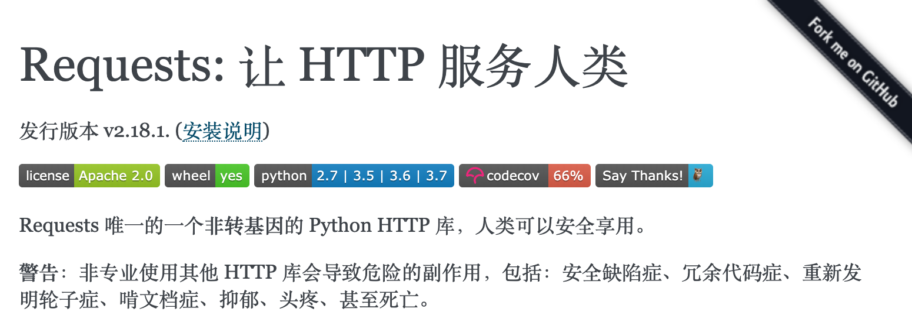

好玩的Python
因为下面的代码都非常简单，简单到直接使用Python的交互式环境就能完成。当然，官方Python自带的交互式环境比较难用，推荐大家使用ipython，可以使用下面的命令来安装ipython，安装成功后键入ipython命令就能进入交互式环境。
pip install ipython
或
pip3 install ipython
ipython最直观的优点：
- 可以用?或者??来获取帮助。
- 可以用!调用系统命令。
- 可以使用Tab键自动补全。
- 可以使用魔法指令，如：%timeit。
没有工具用代码也能P图
安装pillow三方库。
PIL（Python Imaging Library）是Python平台事实上的图像处理标准库了。PIL功能非常强大，而API却非常简单易用。但是PIL仅支持到Python 2.7，而且很多年都没有人维护了，于是一群志愿者在PIL的基础上创建了兼容的版本，名字叫Pillow，除了支持Python 3.x还加入了很多有用且有趣的新特性。
pip install pillow或
pip3 install pillow加载图片。
from PIL import Image chiling = Image.open('chiling.jpg') chiling.show()使用滤镜。
from PIL import ImageFilter chiling.filter(ImageFilter.EMBOSS).show() chiling.filter(ImageFilter.CONTOUR).show()图像剪裁和粘贴。
rect = 220, 690, 265, 740 watch = chiling.crop(rect) watch.show() blured_watch = watch.filter(ImageFilter.GaussianBlur(4)) chiling.paste(blured_watch, (220, 690)) chiling.show()生成镜像。
chiling2 = chiling.transpose(Image.FLIP_LEFT_RIGHT) chiling2.show()生成缩略图。
width, height = chiling.size width, height = int(width * 0.4), int(height * 0.4) chiling.thumbnail((width, height))合成图片。
frame = Image.open('frame.jpg') frame.show() frame.paste(chiling, (210, 150)) frame.paste(chiling2, (522, 150)) frame.show()
上面的知识在Python-100-Days项目的第15天中也有对应的内容。
向微信好友群发祝福视频
安装itchat三方库。
itchat是一个开源的微信个人号接口，使用Python调用微信从未如此简单。
pip install itchat或
pip3 install itchat登录微信。
import itchat itchat.auto_login()说明：用自己的微信扫描屏幕上出现的二维码就完成了登录操作，登录之后才能获取自己的好友信息以及发送消息给自己的好友。
查找自己的朋友。
friends_list = itchat.get_friends(update=True) print(len(friends_list)) luohao = friends_list[0] props = ['NickName', 'Signature', 'Sex'] for prop in props: print(luohao[prop])说明：friends_list相当于是一个列表，列表中的第一个元素是自己。
随机选出5个朋友，获得他们的用户名、昵称、签名。
lucky_friends = random.sample(friends_list[1:], 5) props = ['NickName', 'Signature', 'City'] for friend in lucky_friends: for prop in props: print(friend[prop] or '没有此项信息') print('-' * 80)给朋友发送文字消息。
itchat.send_msg('急需一个红包来拯救堕落的灵魂！！！', toUserName='@8e06606db03f0e28d0ff884083f727e6')群发视频给幸运的朋友们。
lucky_friends = random.sample(friends_list[1:], 5) for friend in lucky_friends: username = friend['UserName'] itchat.send_video('/Users/Hao/Desktop/my_test_video.mp4', toUserName=username)
利用itchat还能做很多事情，比如有好友给自己发了消息又撤回了，如果想查看这些被撤回的消息，itchat就可以做到（注册一个接收消息的钩子函数，请参考CSDN上的一篇文章）；再比如，有时候我们想知道某个好友有没有把我们删除或者拉入黑名单，也可以利用itchat封装的群聊功能，非好友和黑名单用户不会被拉入群聊，通过创建群聊函数的返回值就可以判定你和指定的人之间的关系。
不用客户端查看热点新闻
安装requests库。（点击常看官方文档）

pip install requests或
pip3 install requests爬取新闻数据或者通过API接口获取新闻数据。
import requests resp = requests.get('http://api.tianapi.com/allnews/?key=请使用自己申请的Key&col=7&num=50')说明：上面使用了天行数据提供的数据接口，需要的话可以自行去天行数据的网站注册开通，调用接口的时候要填写注册成功后系统分配给你的key。
使用反序列化将JSON字符串解析为字典并获取新闻列表。
import json newslist = json.loads(resp.text)['newslist']对新闻列表进行循环遍历，找到感兴趣的新闻，例如：华为。
for news in newslist: title = news['title'] url = news['url'] if '华为' in title: print(title) print(url)调用短信网关发送短信到手机上，告知关注的新闻标题并给出链接。
import re pattern = re.compile(r'https*:\/\/[^\/]*\/(?P<url>.*)') matcher = pattern.match(url) if matcher: url = matcher.group('url') resp = requests.post( url='http://sms-api.luosimao.com/v1/send.json', auth=('api', 'key-请使用你自己申请的Key'), data={ 'mobile': '13548041193', 'message': f'发现一条您可能感兴趣的新闻 - {title}，详情点击https://news.china.com/{url} 查看。【Python小课】' }, timeout=10, verify=False )说明：上面的代码使用了螺丝帽提供的短信网关服务，利用短信网关发送短信是需要支付费用的，但是一般的平台都会提供若干条免费的测试短信。发送短信必须遵守平台的规则，违规的短信是无法发送的。上面发短信时使用的短信模板（“发现一条您可能感兴趣的新闻 - ###，详情点击https://news.china.com/### 查看。”）和短信签名（“【Python小课】”）需要登录螺丝帽管理平台进行配置，如果不清楚如何配置，可以联系平台的客服人员进行咨询。